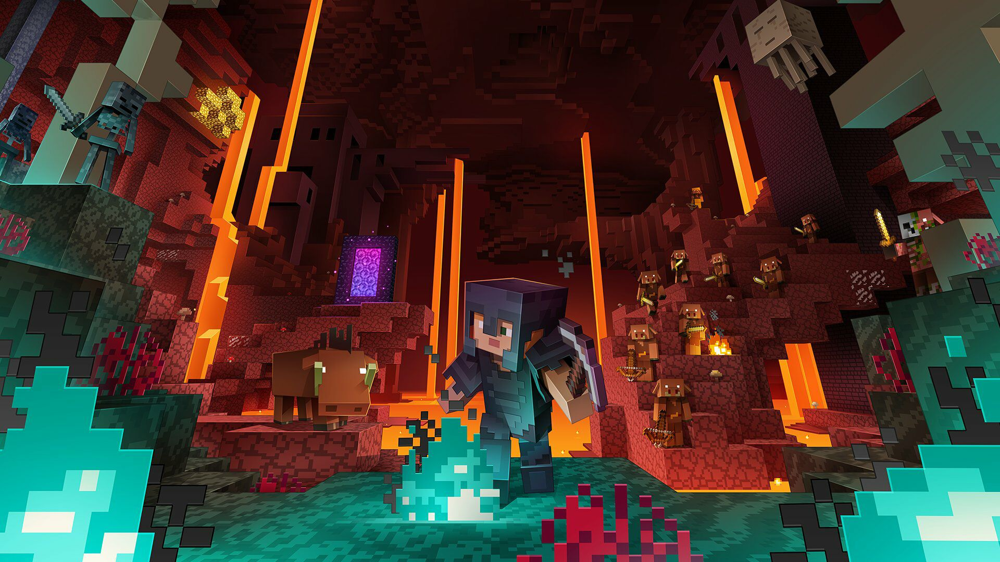

Minecraft Nether Update
We're happy to announce that we updated our vanilla server from 1.15.2 to 1.16.1 which includes a lot of new content in the Nether realm!
While 1.16.1 might not have all the client-side mods available yet (not required to play), the whole point of the vanilla server is to keep up to date with the latest vanilla version. If you prefer to play with client-side mods, we recommend you to play on our SpigotMC server which is still running 1.52.2 and will likely be running that version for a little while longer.
Note that we generally skip a new release until a point release which fixes issues introduced in new releases. Which is why we went straight to 1.16.1 instead of 1.16.0 as we try to provide the greatest and most stable services to you.
Furthermore, we'd like to announce that we upgraded our server to the latest Ubuntu 20.04 (from 18.04) with a fresh install, which is why there was a short down-time of our servers. The website was unaffected by this.
We hope you'll continue to enjoy playing on our servers and wish you fun in the new Nether!